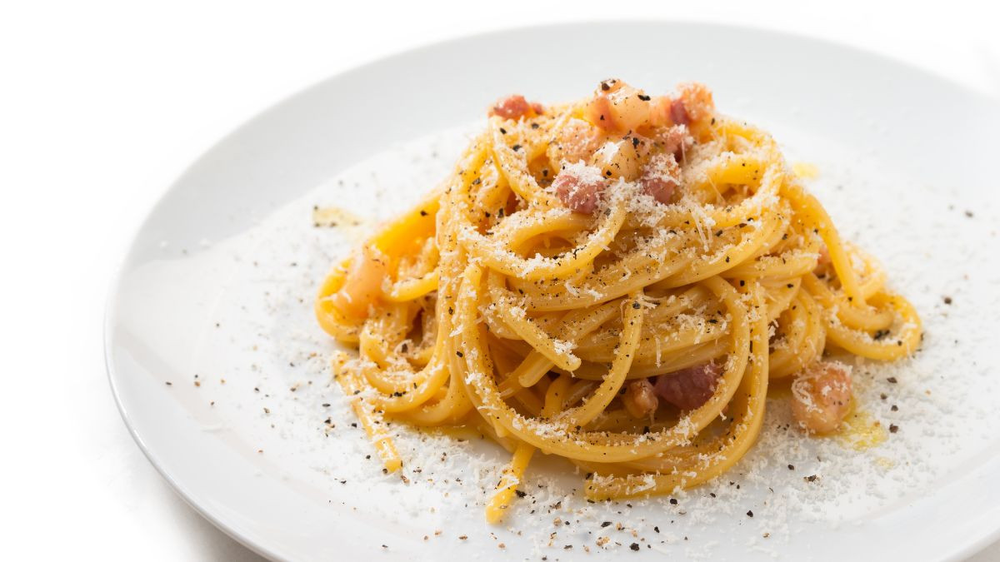

Carbonara

Description
Carbonara can be quite a difficult dish to perfect but if you've got some time and a little of patience, you can make this in no time!
I really like to make it when it's cold outside because it's quite a comforting dish.
The recipe itself originates from the region of Lazio, the same place as amatriciana, but this dish consists of eggs, spaghetti and cheese,
omitting the tomato sauce. It's a lovely dish to make and enjoy for the whole family.
Ingredients
Serves four people
- Spaghetti - 320g
- Eggs - 4 + an extra egg yolk
- Guanciale - 150g
- Pecorino Romano - 50g
- Black pepper to season
Method
- To prepare carbonara, start by putting a pot of salted water on the stove to cook the pasta. Put the spaghetti in boiling water and cook them al dente. Meanwhile, pour the egg yolks into a bowl.
- In the meantime, remove the rind from the guanciale and cut it into slices first, and then into strips about 1cm thick. The leftover rind can be reused to flavor other dishes.
- Put the pieces of guanciale into a non-stick pan and brown for about 10 minutes on medium-high heat.
- Add the Pecorino Romano and season with black pepper. Mix everything together with a hand whisk, until you obtain a smooth cream.
- The guanciale should have finished cooking, so turn off the heat and remove it from the pan using a ladle, leaving the inside the water inside the pan.
- Transfer the guanciale to a small bowl and set aside.
- Pour a ladle of pasta water into the pan, together with the bacon fat.
- Drain the pasta directly into the pan with the cooking juices and sauté it briefly to flavour it.
- Remove from heat and pour the egg and Pecorino mixture into the pan. Stir quickly to combine.To make it creamy, if necessary, you can add a little of the pasta cooking water.
- Add the guanciale, mix one last time, and serve the spaghetti carbonara immediately, adding more pecorino on top and a pinch of black pepper.